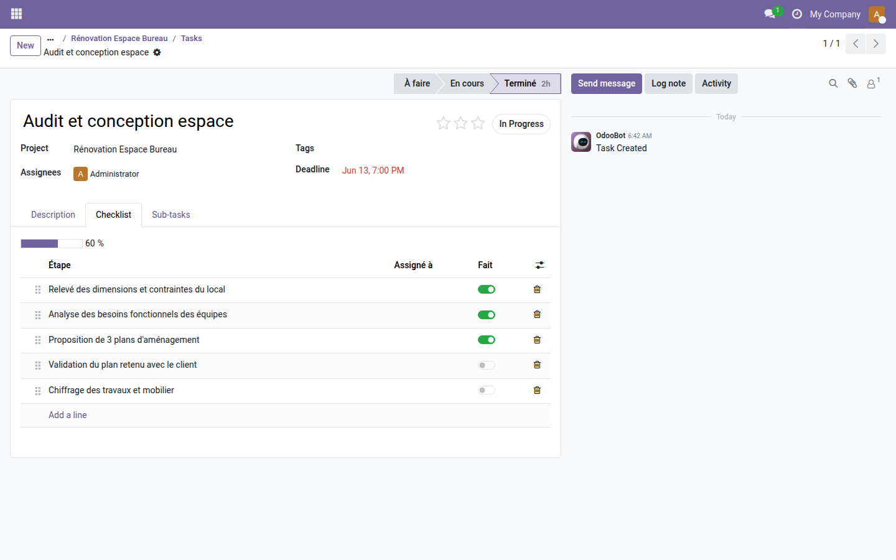
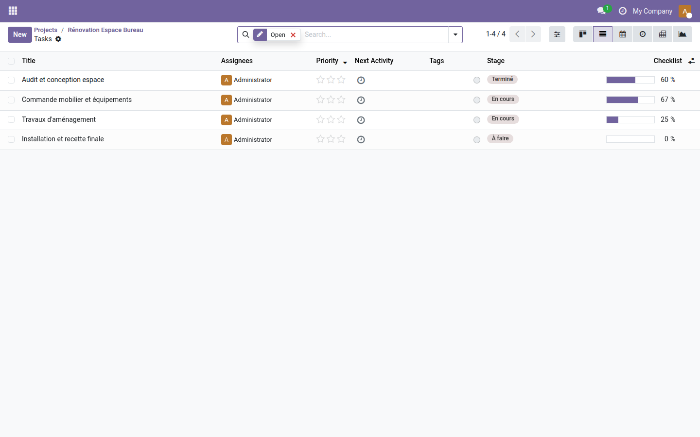

Checklist d'étapes sur les tâches de projet
Découpez chaque tâche en sous-étapes cochables, suivez l'avancement en temps réel et ne laissez plus rien passer.
Une tâche de projet contient rarement une seule action : rédiger, valider, notifier, livrer… Mais la tâche reste à l'état « En cours » tant que personne ne la marque terminée. Il n'existe pas de moyen natif dans Odoo Community pour lister ces micro-étapes, voir ce qui est fait, ce qui reste, et qui s'en charge. Résultat : les relances passent par la messagerie, les oublis s'accumulent, et l'avancement réel reste invisible jusqu'à la dernière minute.
Ce que ça apporte
- ✅ Onglet Checklist dédié — chaque tâche dispose d'une liste d'étapes éditable inline, réordonnable par glisser-déposer, sans configuration préalable.
- 📊 Barre de progression automatique — le pourcentage d'étapes cochées se calcule et s'affiche en temps réel, sans saisie manuelle.
- 👤 Assignation par étape — chaque sous-étape peut être attribuée à un utilisateur différent, identifiable d'un coup d'œil grâce à son avatar.
- 🔁 Colonne d'avancement dans la liste des tâches — visualisez le taux de complétion directement depuis la vue liste, sans ouvrir chaque tâche.
En images
1. Onglet Checklist dans la fiche tâche
La barre de progression et la liste des étapes apparaissent dans un onglet dédié — chaque ligne est cochable, réordonnable et assignable sans quitter la tâche.

2. Colonne d'avancement dans la liste des tâches
La colonne « Checklist » (optionnelle) affiche la barre de progression directement dans la vue liste — idéal pour piloter un sprint ou un lot de tâches d'un seul regard.

Pourquoi l'adopter
- Fonctionne dès l'installation — aucune configuration requise, aucune dépendance payante.
- Remplace les checklists gérées par e-mail ou dans les commentaires de tâche, principales sources d'oublis.
- L'avancement calculé automatiquement donne une visibilité objective sur l'état réel de la tâche, utile pour les réunions de suivi ou le reporting projet.
- La colonne d'avancement est optionnelle dans la vue liste — elle s'ajoute sans perturber les équipes qui n'utilisent pas encore les checklists.
- Gratuit et open-source (LGPL-3) — utilisable sans limite de nombre d'utilisateurs ou de projets.
Licence LGPL-3 — compatible Odoo 19.0. Gratuit, sans abonnement. Support : apps@odooskills.com.